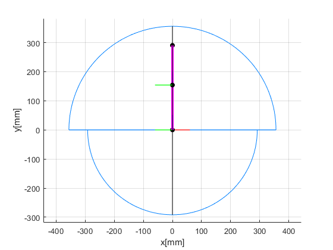

clear
clc
close all
l1 = 203;
l2 = 178;
l3 = 178;
l = 60;
p1 = 0;
p2 = 60;
p3 = 70;
Rz1 = [cosd(p1) -sind(p1) 0 0;
sind(p1) cosd(p1) 0 0;
0 0 1 0;
0 0 0 1]
Rz_1 = [cosd(90-p1) -sind(90-p1) 0 0;
sind(90-p1) cosd(90-p1) 0 0;
0 0 1 0;
0 0 0 1]
Ry2 = [cosd(p2) 0 sind(p2) 0;
0 1 0 0;
-sind(p2) 0 cosd(p2) 0;
0 0 0 1]
Ry3 = [cosd(p3) 0 sind(p3) 0;
0 1 0 0;
-sind(p3) 0 cosd(p3) 0;
0 0 0 1]
Tz1 = [1 0 0 0;
0 1 0 0;
0 0 1 l1;
0 0 0 1]
Tz2 = [1 0 0 0;
0 1 0 0;
0 0 1 l2;
0 0 0 1]
Pc = [0;
0;
l3;
1]
NullV = [0;
0;
0;
1]
A = [Rz1*Tz1*NullV];
B = [Rz_1*Tz1*Ry2*Tz2*NullV];
C = [Rz_1*Tz1*Ry2*Tz2*Ry3*Pc];
x = [0 A(1) B(1) C(1)];
y = [0 A(2) B(2) C(2)];
z = [0 A(3) B(3) C(3)];
Pr = [l;
0;
0;
1]
Pg = [0;
l;
0;
1]
Pb = [0;
0;
l;
1]
r_0 = Rz1*Pr;
g_0 = Rz1*Pg;
b_0 = Rz1*Pb;
xr0 = [0 r_0(1)];
yr0 = [0 r_0(2)];
zr0 = [0 r_0(3)];
xg0 = [0 g_0(1)];
yg0 = [0 g_0(2)];
zg0 = [0 g_0(3)];
xb0 = [0 b_0(1)];
yb0 = [0 b_0(2)];
zb0 = [0 b_0(3)];
r_1 = Rz_1*Tz1*Ry2*Pr;
g_1 = Rz_1*Tz1*Ry2*Pg;
b_1 = Rz_1*Tz1*Ry2*Pb;
xr1 = [A(1) r_1(1)];
yr1 = [A(2) r_1(2)];
zr1 = [A(3) r_1(3)];
xg1 = [A(1) g_1(1)];
yg1 = [A(2) g_1(2)];
zg1 = [A(3) g_1(3)];
xb1 = [A(1) b_1(1)];
yb1 = [A(2) b_1(2)];
zb1 = [A(3) b_1(3)];
r_2 = Rz_1*Tz1*Ry2*Tz2*Ry3*Pr;
g_2 = Rz_1*Tz1*Ry2*Tz2*Ry3*Pg;
b_2 = Rz_1*Tz1*Ry2*Tz2*Ry3*Pb;
xr2 = [B(1) r_2(1)];
yr2 = [B(2) r_2(2)];
zr2 = [B(3) r_2(3)];
xg2 = [B(1) g_2(1)];
yg2 = [B(2) g_2(2)];
zg2 = [B(3) g_2(3)];
xb2 = [B(1) b_2(1)];
yb2 = [B(2) b_2(2)];
zb2 = [B(3) b_2(3)];
p3_1 = 0;
p2_1 = [-55:125];
x_1 = (l2*sind(p2_1)+l3*sind(p2_1+p3_1))*sind(p1);
z_1 = l1 + l2*cosd(p2_1)+l3*cosd(p2_1 + p3_1);
y_1 = (l2*sind(p2_1)+l3*sind(p2_1+p3_1))*cosd(p1);
p3_2 = [0:150];
p2_2 = 125;
x_2 = (l2*sind(p2_2)+l3*sind(p2_2+p3_2))*sind(p1);
z_2 = l1 + l2*cosd(p2_2)+l3*cosd(p2_2 + p3_2);
y_2 = (l2*sind(p2_2)+l3*sind(p2_2+p3_2))*cosd(p1);
p3_3 = 150;
p2_3 = [-55:125];
x_3 = (l2*sind(p2_3)+l3*sind(p2_3+p3_3))*sind(p1);
z_3 = l1 + l2*cosd(p2_3)+l3*cosd(p2_3 + p3_3);
y_3 = (l2*sind(p2_3)+l3*sind(p2_3+p3_3))*cosd(p1);
p3_4 = [0:150];
p2_4 = -55;
x_4 = (l2*sind(p2_4)+l3*sind(p2_4+p3_4))*sind(p1);
z_4 = l1 + l2*cosd(p2_4)+l3*cosd(p2_4 + p3_4);
y_4 = (l2*sind(p2_4)+l3*sind(p2_4+p3_4))*cosd(p1);
n_181 = zeros(1, 181);
x_center = [-356 356];
y_center = [0 0];
z_center = [0 0];
p3_11 = 0;
p2_11 = 90;
p1_11 = [-90:90];
x_11 = (l2*sind(p2_11)+l3*sind(p2_11+p3_11))*sind(p1_11);
y_11 = (l2*sind(p2_11)+l3*sind(p2_11+p3_11))*cosd(p1_11);
p3_22 = 0;
p2_22 = -55;
p1_22 = [-90:90];
x_22 = (l2*sind(p2_22)+l3*sind(p2_22+p3_22))*sind(p1_22);
y_22 = (l2*sind(p2_22)+l3*sind(p2_22+p3_22))*cosd(p1_22);
figure Name Manipulator
hold on
plot3(x,y,z, 'LineWidth', 3, 'Color', [1 0 1])
scatter3(x, y, z, 'black', 'filled')
plot3(x_1,y_1,z_1, 'LineWidth', 0.5, 'Color', [0 0 0])
plot3(x_2,y_2,z_2, 'LineWidth', 0.5, 'Color', [0 0 0])
plot3(x_3,y_3,z_3, 'LineWidth', 0.5, 'Color', [0 0 0])
plot3(x_4,y_4,z_4, 'LineWidth', 0.5, 'Color', [0 0 0])
plot3(x_11,y_11,n_181, 'LineWidth', 0.5, 'Color', [0 0.5 1])
plot3(x_22,y_22,n_181, 'LineWidth', 0.5, 'Color', [0 0.5 1])
plot3(x_center,y_center,z_center, 'LineWidth', 1, 'Color', [0 0.5 1])
plot3(xr0,yr0,zr0, 'LineWidth', 1, 'Color', [1 0 0])
plot3(xg0,yg0,zg0, 'LineWidth', 1, 'Color', [0 1 0])
plot3(xb0,yb0,zb0, 'LineWidth', 1, 'Color', [0 0 1])
plot3(xr1,yr1,zr1, 'LineWidth', 1, 'Color', [1 0 0])
plot3(xg1,yg1,zg1, 'LineWidth', 1, 'Color', [0 1 0])
plot3(xb1,yb1,zb1, 'LineWidth', 1, 'Color', [0 0 1])
plot3(xr2,yr2,zr2, 'LineWidth', 1, 'Color', [1 0 0])
plot3(xg2,yg2,zg2, 'LineWidth', 1, 'Color', [0 1 0])
plot3(xb2,yb2,zb2, 'LineWidth', 1, 'Color', [0 0 1])
xlabel('x[mm]')
ylabel('y[mm]')
zlabel('z[mm]')
grid on
axis('equal')
Rz1 =
1 0 0 0
0 1 0 0
0 0 1 0
0 0 0 1
Rz_1 =
0 -1 0 0
1 0 0 0
0 0 1 0
0 0 0 1
Ry2 =
0.5000 0 0.8660 0
0 1.0000 0 0
-0.8660 0 0.5000 0
0 0 0 1.0000
Ry3 =
0.3420 0 0.9397 0
0 1.0000 0 0
-0.9397 0 0.3420 0
0 0 0 1.0000
Tz1 =
1 0 0 0
0 1 0 0
0 0 1 203
0 0 0 1
Tz2 =
1 0 0 0
0 1 0 0
0 0 1 178
0 0 0 1
Pc =
0
0
178
1
NullV =
0
0
0
1
Pr =
60
0
0
1
Pg =
0
60
0
1
Pb =
0
0
60
1
